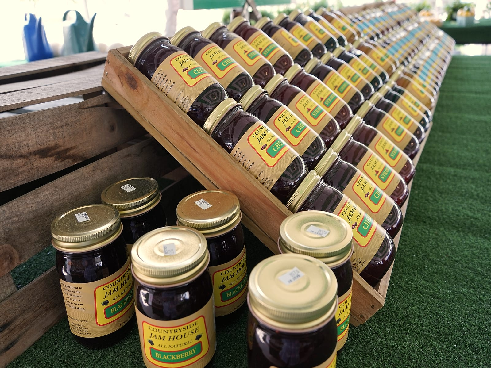

Konrad grew up in Waldo, just a bike ride from Bingham, the old neighborhood school near 77th and Wyandotte. As a kid he would pedal past Everyday Produce, then a small fruit and vegetable stand near 75th and Wornall run by Frank DeLuna. Frank already knew the family by reputation. Konrad's brothers had proven themselves as reliable help at Jasper's and Marco Polo's, the longtime Italian restaurant and market on 103rd Street. So in 1985, Frank offered Konrad a job at the stand.
Konrad stayed with Everyday Produce through college at the University of Missouri, where he studied criminal psychology. After graduation, and after time away including a stretch abroad in Australia, Frank called him back with an offer to help take over the business. By the late 1990s, Konrad was running it himself.


Everyday Produce has moved with the neighborhood over the years. From its original home near 75th and Wornall, to a long run near the Price Chopper at 103rd between Wornall and State Line, and now back in the heart of Waldo at 7300 Wornall Road. Today, Konrad is still at the stand every day of the season, greeting regulars, sampling fruit, and hand-picking produce from Kansas City-area farmers and trusted distributors.
When winter comes and the produce tents close, he keeps working. He runs a snow-plow service through the cold months until it is time to open the stand again the next April.